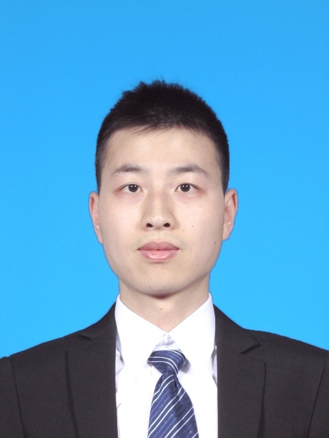

I'm a Math Researcher in Algebraic Geometry. I obtained my Ph.D. degree in July 2019 from Tsinghua University, under supervision of Eduard Looijenga. I'm going to Max Planck Institute at Bonn as a Postdoc.
My research is in Algebraic Geoemtry. I am interested in K3 surfaces, cubic fourfolds, hyper-Kahler manifolds. Recently I worked on moduli and automorphisms of those objects.
Email: zhengzw11 {at} 163.com
CV (pdf)
October 2018: K3 surface and cubic fourfold, Short Course, Tsinghua University
Fall 2015: Teaching Assistant, Algebraic Geometry 1, Tsinghua University
Spring 2015: Teaching Assistant, Basics of Advanced Algebra, Tsinghua University
Fall 2014: Teaching Assistant, Algebraic Geometry 1, Tsinghua University